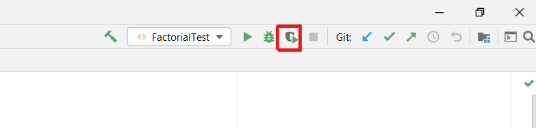
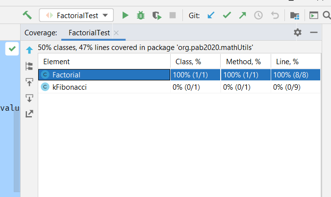

Desarrollo guiado por pruebas¶
El desarrollo guiado por pruebas o TDD es una metodología de desarrollo de software que consiste en escribir primero pruebas (tests unitarios) del código y después el código fuente, de forma que éste tenga que satisfacer las pruebas.
Con esta metodología se consigue un código más robusto, seguro y una mayor velocidad de desarrollo.
jUnit y Maven¶
jUnit es un framework open-source de automatización de pruebas unitarias para Java. jUnit permite ejecutar los métodos de las clases Java de manera controlada, evaluando en cada una el output obtenido en base al output esperado.
Para añadir jUnit al proyecto Maven, tan solo hace falta actualizar el archivo pom.xml generado por Maven.
Las dependencias de maven se pueden encontrar en https://mvnrepository.com/. Al seleccionar una dependencia, la propia página suministra el código a añadir para Maven, y otras herramientas como Gradle, SBT, Ivy, etc…
En este caso, se va a añadir la dependencia org.junit.jupiter en la versión 5.6.2.
<dependencies>
<dependency>
<groupId>org.junit.jupiter</groupId>
<artifactId>junit-jupiter-engine</artifactId>
<version>5.6.2</version>
<scope>test</scope>
</dependency>
</dependencies>
Nota
Se tiene que actualizar la etiqueta dependencies del pom.xml, de modo que cada dependencia vaya dentro de esas llaves. No se trata de añadir este código al archivo sin más.
El siguiente paso es sincronizar las dependencias con Maven. En IntelliJ, esto se puede hacer desde la pestaña Builds del menu inferior. En ella, hay que pulsar el botón ↺. Ahora, el entorno está listo para trabajar.
Para este tutorial, se usará una implementación de cálculo de factorial. Para ello, se creará una clase Factorial que tendrá un método compute().
Para crear los tests para esta clase, en src/test/ se creará otra clase llamada FibonacciTest, donde se definirán las pruebas.
Pra definir unas buenas pruebas, se tienen que pensar diferentes casos a los que se podrá someter el método, en este caso, al calcular el factorial, el usuario podrá introducir un número nefativo, un 0, u otros números. Teniendo esto en cuenta, se crearán las siguientes pruebas:
0 → 1
1 → 1
2 → 2
4 → 24
negativo → lanzar una excepción
Definiendo las pruebas¶
Las pruebas se definirán en la clase FibonacciTest, un método para cada prueba. Es posible escribirlas todas juntas en un solo método, pero esto es una mala práctica, ya que si falla un caso, será más complicado saber cual es.
En nuestro caso, para utilizar el método compute() de la clase Factorial hace falta instanciar la clase (esto se puede «evitar» definiendo ese método como estático). Para no tener que instanciar la clase para cada prueba, se utilizará el decorador @BeforeEach, el cual define el método que se tendrá que ejecutar antes de cada prueba:
class FactorialTest {
private Factorial factorial;
@BeforeEach
public void setup() {
factorial = new Factorial();
}
}
Ahora ha llegado el momento de definir las pruebas. Para esto, se utiliza el decorador @Test. Es una buena práctica llamar los métodos por lo que prueban. Por ejemplo: la prueba que comprueba si el factorial de 0 debe ser 1 se podría llamar
public void shouldFactorialOf0Return1() {}
Para comprobar si el método devuelve el resultado esperado, se utiliza el método assertEquals() el cual toma como argumentos dos valores, y los compara:
public void shouldFactorialOf0Return1() {
long expectedValue = 1;
long obtainedValue = factorial.compute(0);
assertEquals(expectedValue, obrainedValue);
}
Se sigue el mismo método para los demás casos, menos el de la excepción. Para comprobar si un método lanza una excepción, en vez de assertEquals() se utiliza assertThrows(), el cual acepta como argumento la clase de la excepción que se espera, y la función que lanza la excepción. En este caso, para el factorial de un número negativo, la prueba sería así:
@Test
public void shouldFactorialOfANegativeNumberRaiseAnException() {
assertThrows(RuntimeException.class, () -> factorial.compute(-1));
}
Con las pruebas listas, se puede proceder a programar la clase. En este tutorial se ha hecho un salto en el tiempo y se obtenido la función lista, pero esto no pasa en la vida real :).
/**
* This class implements a method to compute the factorial of an integer number.
*
* @author Antonio J. Nebro
*/
public class Factorial {
public long compute(long value) {
long result;
if (value < 0) {
throw new RuntimeException("Negative number: " + value) ;
} else if ((value == 0) || (value == 1)) {
result = 1;
} else {
result = value * compute(value - 1);
}
return result;
}
}
Corriendo las pruebas¶
Para ejecutar las pruebas, se puede:
Ejecutar la clase de los tests
Usar el panel build del IDE
Usar Maven CLI (command line interface)
Para hacer este tutorial independiente de los IDEs, se usará el CLI. Para ejecutar los tests:
mvn test
La salida será algo así:
[INFO] Scanning for projects...
[INFO]
[INFO] -----------------------< org.example:MathUtils >------------------------
[INFO] Building Math Utils 1.0-SNAPSHOT
[INFO] --------------------------------[ jar ]---------------------------------
[INFO]
[INFO] --- maven-resources-plugin:2.6:resources (default-resources) @ MathUtils ---
[INFO] Using 'UTF-8' encoding to copy filtered resources.
[INFO] skip non existing resourceDirectory D:\Google Drive - Universidad de Málaga\Universidad\3 curso\2 Cuatrimestre\Programación Avanzada en Bioinformática\PAB2020\src\main\resources
[INFO]
[INFO] --- maven-compiler-plugin:3.1:compile (default-compile) @ MathUtils ---
[INFO] Nothing to compile - all classes are up to date
[INFO]
[INFO] --- maven-resources-plugin:2.6:testResources (default-testResources) @ MathUtils ---
[INFO] Using 'UTF-8' encoding to copy filtered resources.
[INFO] skip non existing resourceDirectory D:\Google Drive - Universidad de Málaga\Universidad\3 curso\2 Cuatrimestre\Programación Avanzada en Bioinformática\PAB2020\src\test\resources
[INFO]
[INFO] --- maven-compiler-plugin:3.1:testCompile (default-testCompile) @ MathUtils ---
[INFO] Nothing to compile - all classes are up to date
[INFO]
[INFO] --- maven-surefire-plugin:2.22.0:test (default-test) @ MathUtils ---
[INFO]
[INFO] -------------------------------------------------------
[INFO] T E S T S
[INFO] -------------------------------------------------------
[INFO] Running org.pab2020.mathUtils.FactorialTest
[INFO] Tests run: 7, Failures: 0, Errors: 0, Skipped: 0, Time elapsed: 0.032 s - in org.pab2020.mathUtils.FactorialTest
[INFO]
[INFO] Results:
[INFO]
[INFO] Tests run: 7, Failures: 0, Errors: 0, Skipped: 0
[INFO]
[INFO] ------------------------------------------------------------------------
[INFO] BUILD SUCCESS
[INFO] ------------------------------------------------------------------------
[INFO] Total time: 2.585 s
[INFO] Finished at: 2021-03-23T13:47:45+01:00
[INFO] ------------------------------------------------------------------------
Si sale BUILD SUCCESS y todos los tests pasados, entonces ¡enhorabuena, el desarrollo está llegando a su fin! Si hay casos que fallan, habrá que sguir desarrollando y revisando fallos en el código. De esta forma, el código resultante será mucho más robusto y satisfará los deseos del cliente.
Un buen indicador de la calidad de las pruebas es la cobertura de código o code coverage. Es una medida porcentual que mide el porcentaje del código que se ha probado. Para realizar un test con cobertura en IntelliJ, hay que clicar en el botón de la barra superior de build:
Al terminar los tests saldrá una tabla de resumen de la cobertura:
La última fase es limpiar el código, y dejarlo legible.
Nota
Si quiere descargar el proyecto, lo puede hacer desde el repositorio de GitHub de Antonio J. Nebro, nuestro profesor: https://github.com/ajnebro/PAB2020.